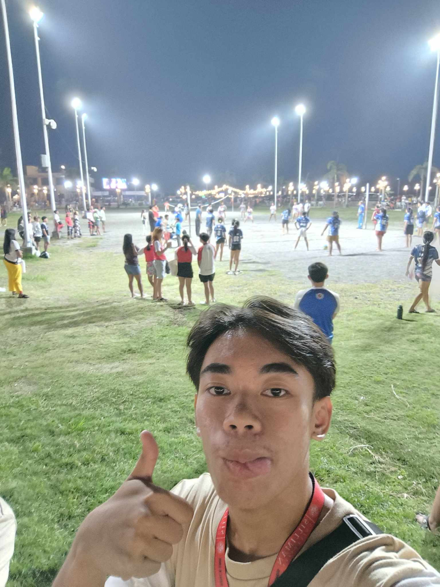
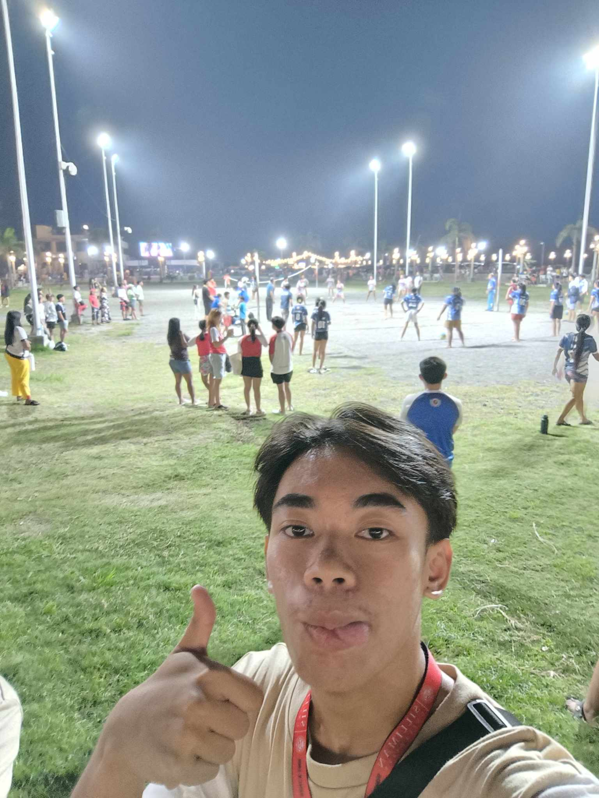

Journal Entries
GE10A
From August 14 to 16, 2024, I attended Exec Connect, an event organized by the College of Computer Studies (CCS) from 1 to 4 PM. This program was designed for senior students to promote the different committees under CCS, such as those related to Computer Science, Information Technology, Information Systems, and Library and Information Sciences. As a participant, I learned about the various opportunities available within our department and how these committees could help us grow as students and individuals.
This activity gave me a clear view of the exciting possibilities in our department. I was surprised by how diverse the committees were and how each offered unique opportunities to develop our skills and interests. The presentations from the senior students were inspiring because they showed how much they had grown through these committees. The most meaningful part for me was learning how these groups could help us connect with peers, gain experience, and contribute to the department’s success.
Because of this event, I’m more eager to join one of the committees that match my interests and skills. I want to explore opportunities where I can contribute while also learning and growing. If I could attend this event again, I would prepare questions about the roles and responsibilities in the committees to make the most out of the discussions.
Because of this activity, I am more confident about the opportunities within CCS and excited to be an active part of its community. I feel motivated to get involved and make the most of my time as a student here.
On August 15, 2024, I participated in the Freshman Walk 2024, organized by Silliman University. This event marked my official welcome as a freshman. It was a day-long activity where we walked around the campus and ended at the amphitheater, greeted by deans and reverends. The event also included presentations from different departments, fellowship singing, and an introduction to Silliman’s traditions.
I was honored to be officially welcomed into the Silliman University community as a result of this involvement. The students' and faculty's enthusiasm and harmony throughout the program astounded me. The best part was watching everyone gather to commemorate this milestone, which gave me a sense of belonging and welcome. Even though the heat made the journey exhausting, it was worthwhile, and I came away feeling eager for the years to come.
This event reminded me of the importance of being an active member of the university community. I plan to participate in more activities and traditions to make the most out of my time here. If I could experience this again, I would prepare better by bringing water and wearing more comfortable shoes to enjoy the day fully.
Because of this activity, I am more connected to Silliman University and eager to embrace its traditions. I feel inspired to create lasting memories and build meaningful relationships during my time here.
On August 19, 2024, I attended the Hibalag Opening 2024, organized by Silliman University, from 5 to 10 PM. This event marked the start of the 11-day celebration of Silliman’s Founders Day. It brought together students, alumni, and visitors in a vibrant atmosphere filled with food, music, and activities. As a participant, I joined the festivities and enjoyed learning more about the traditions that define Silliman.
I learned from this event how significant legacy and community are to Silliman University. The commitment of the alumni and their pride in belonging to this university inspired me. The feeling of unity and joy that made me glad to be a Sillimanian was, in my opinion, the most memorable aspect. I now have a greater understanding of the university's history and core beliefs thanks to the vibrant atmosphere and cultural events.
This experience encouraged me to embrace the traditions of Silliman and participate more actively in similar events. I also plan to learn more about the university’s history and find ways to contribute to its legacy. If I could attend again, I would bring my friends and take more pictures to capture the moment.
Because of this activity, I am more proud to be part of Silliman University and excited to participate in its traditions. I feel inspired to contribute to its legacy in my own way.
On August 24, 2024, I attended the DOST Hibaw-anay 2024, organized by Silliman University, from 2:30 to 4:30 PM. The term "Hibaw-anay" refers to sharing knowledge, and this event used a creative and fun approach to achieve that goal. It was modeled after the popular game show Family Feud, with a focus on topics related to DOST, Silliman University’s programs, and what it means to be a scholar. As a participant and part of photography committee, I enjoyed watching and documenting teams compete while learning more about these important topics in an engaging and even humorous way.
This activity was both entertaining and educational. It gave me a better understanding of how DOST supports science and technology initiatives while showcasing the role of scholars in promoting these fields. The game-show format made the event fun and interactive, and I was surprised by how much I learned while enjoying the comedy and competitive spirit of the participants. The most memorable part was seeing the creative way important information was shared, which made the experience both impactful and enjoyable.
This event motivated me to learn more about DOST’s programs and how I can make the most of my own learning journey. It also showed me the value of presenting knowledge in ways that are engaging and accessible to everyone. If I could attend again, I would actively participate in the games or discussions to make the experience even more memorable.
Because of this activity, I am more inspired to value the role of science, education, and creativity in making a difference. I feel encouraged to share knowledge in innovative and fun ways to inspire others.
On August 26, 2024, I participated in the Parada Sillimaniana 2024, organized as part of Silliman University’s Founders Day celebrations, from 3 to 5:30 PM. This parade brought together different groups, including academic units, alumni associations, and the Board of Trustees, to celebrate Silliman’s rich history and traditions. As a participant and part of the camera club, I walked and photographed with my fellow students and mentors, proudly representing our department while also taking candid photographs.
This event gave me a strong sense of belonging and pride as a Sillimanian. It was exciting to see the creativity of each group’s/department's presentation and the joy it brought to the crowd. The most memorable part was the participants' energy and how everyone came together to celebrate the university’s legacy. The only challenge was the long walk, but being part of such a meaningful event was worth it.
This experience made me more appreciative of Silliman’s traditions and the importance of honoring its history. I want to participate in more Founders Day activities in the future and share the experience with others. If I could join again, I would prepare better by practicing cheers and learning more about our department’s contribution to the parade.
Because of this activity, I am more connected to my university and proud of its achievements. I feel inspired to continue representing Silliman’s values in my academic and personal life.
On August 31, 2024, I attended Dal-uy 2024, an annual event at Foundation University, from 5 to 8 PM. This festival, inspired by the Japanese tradition of sending lanterns afloat, symbolizes hope and dreams. As a participant, I joined in writing messages of aspirations on a lantern and releasing it into the water alongside others. The event was both serene and meaningful.
It was a unique and profound experience. While taking part in a custom that united people, it provided me with an opportunity to consider my goals and dreams. The most magnificent aspect was witnessing all of the lanterns afloat in the sea, representing the hopes and dreams of all those involved. It brought home to me the value of community and optimism in realizing our goals.
This experience inspired me to hold onto my dreams and work toward them with determination. It also made me realize how traditions like this can bring people closer and foster a sense of shared purpose. If I could attend again, I would take more time to carefully write my message and share the experience with more friends.
Because of this activity, I am more hopeful about my future and thankful for opportunities to connect with others through meaningful traditions. I feel inspired to keep pursuing my dreams while supporting those around me.